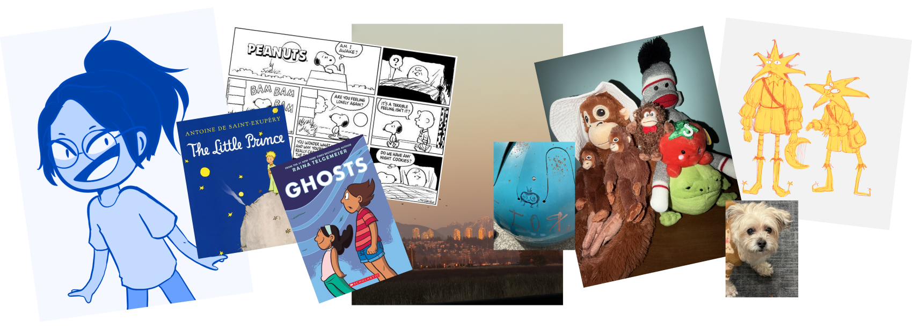

I've always had a passion for storytelling, developing a love for comics, cartoons, character designs and like many who end up in creative fields – illustrating. Overtime, I began to incorporate my passions into the design work I do at school and for my community. However, I slowly learned that I did not only want to create striking illustrations, but something purposeful as well. This led me down many rabbit holes such as graphic designing for clubs, mascot creation for non-profits, and teaching new designers where sharing your craft is just as important as creating it.
